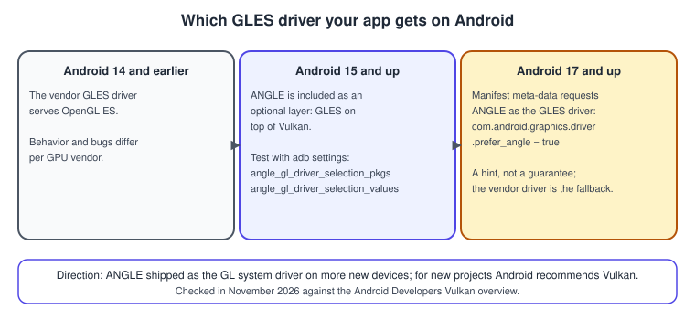
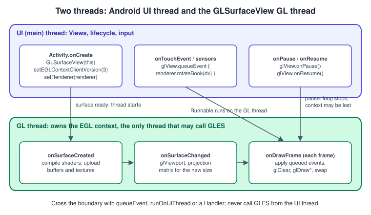
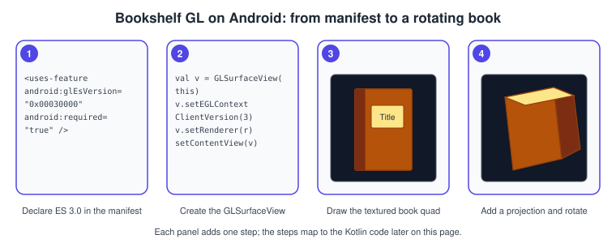
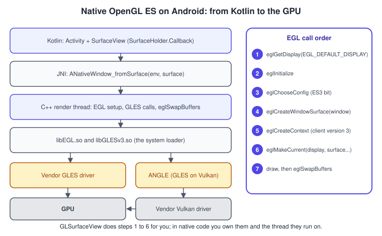

OpenGL ES on Android
|
This content was generated with the assistance of AI and should be verified against the official documentation before being relied on in production. |
OpenGL ES is the graphics API that Android has offered since its first releases, and it is still the API behind a great deal
of shipping code: games, camera effects, map renderers and custom views. This page is about the OpenGL ES calls
themselves on Android: which thread they run on, how the context is created and lost, how the version is declared, how to
use the same API from native code, and how to test against the driver stack that Android is moving to. The Views and Compose side (embedding a
GLSurfaceView, the TextureView alternative and the GLTextureView helper) is covered in
Graphics: Canvas, OpenGL ES and GLTextureView, which also holds the table of
OpenGL ES versions and the API level that introduced each one; this page does not repeat that table.
The facts were checked in November 2026 against the Android Developers documentation. The versions documented are OpenGL ES 3.2
with GLSL ES 3.20 and EGL 1.5 as the Khronos baseline, and the Android framework classes in android.opengl
(GLES30, GLES31, GLES32). Android guarantees ES 2.0 on every supported device and ES 3.x only where the device maker provides
a driver, so the examples target ES 3.0 and say where 3.1 or 3.2 adds something. Requirements: Android Studio with the Kotlin
Gradle plugin for the Kotlin part; the NDK and CMake for the native part; a physical device or an emulator with graphics
acceleration enabled for testing. The page continues the running example: the Bookshelf book as a textured, rotating
quad, in the Android variant of Hello Triangle and
Textures and Samplers. The shared model is
bookshelf.glb; the cover texture used here is bookshelf-cover.png from the same download.
This is a platform page of the OpenGL sub-section. The concepts it uses are explained in the general pages The Rendering Pipeline, Textures, Sampling and Mipmaps and GPU Architecture Basics.
Where OpenGL ES stands on Android in 2026
Google’s current guidance is that Vulkan is the primary low-level graphics API on Android and that OpenGL ES remains supported but is no longer under active feature development; the same page states that support for OpenGL ES continues on all devices. For new projects Android recommends Vulkan. That does not make OpenGL ES obsolete for existing code: it is simpler, it runs on every device, and the large body of ES 2.0 and 3.0 code in apps and middleware keeps working.
What does change is the driver underneath. Android 15 and up include ANGLE as an optional layer that runs OpenGL ES on top of Vulkan, and the platform documentation states the expectation that ultimately OpenGL ES will be available only through ANGLE (ANGLE ships as the GL system driver on more new devices). Android 17 and higher add a way for an application to ask for ANGLE from its manifest. The consequence for you is practical: write portable ES 3.0, avoid vendor-specific extensions, and test on ANGLE as well as on the vendor driver. The section "Testing with ANGLE" below shows how.

The two threads of an OpenGL ES app
An OpenGL ES context is current on exactly one thread at a time, and every gl call goes to the context current on the calling
thread. Android’s GLSurfaceView takes care of this by creating its own thread, the GL thread, which creates the EGL context,
makes it current and calls your Renderer methods. The Activity, input events and the rest of the app run on the UI thread. That
split is the single most important thing to know about OpenGL ES on Android, and the cause of most early bugs.

The rules that follow from the figure:
-
Call GLES functions only from
onSurfaceCreated,onSurfaceChanged,onDrawFrameor aRunnablepassed toGLSurfaceView.queueEvent. A GLES call on the UI thread usually does nothing and sets an error, because no context is current there; it never crashes obviously, which makes the bug hard to find. -
Touch handlers run on the UI thread. Hand changes over with
queueEvent { renderer.addYaw(dx) }, or write to a field that is safe to read from another thread (@Volatileor an atomic). The renderer’s own state needs no locking when only the GL thread touches it. -
Views are touched only from the UI thread. To show a score from the GL thread use
Activity.runOnUiThreador aHandler. -
onDrawFrameruns once per frame in the default continuous mode and blocks in the swap until the display is ready, which is what paces the loop. Do not allocate objects in it; a garbage collection pause is a dropped frame.
Render mode
GLSurfaceView.setRenderMode chooses between two behaviours:
| Mode | Behaviour |
|---|---|
|
|
|
|
Lifecycle and context loss
The EGL context belongs to the surface the view draws on, and the surface goes away when the app is not visible. If you forward
Activity.onPause and onResume to the view (a requirement of GLSurfaceView), pausing stops the GL thread. By default
the context is torn down on pause, so every GL object (buffers, textures, programs, framebuffers) is gone on resume, and your
onSurfaceCreated runs again to build them. setPreserveEGLContextOnPause(true) asks the view to keep the context, but it is only
honoured when the device can hold more than one context; treat it as an optimisation, never as a guarantee.
The practical consequences:
-
Keep CPU-side copies (or the means to rebuild) of everything you upload: shader source, vertex arrays, the decoded bitmap or the compressed file, not just the GL name.
-
Create all GL objects in
onSurfaceCreated, never in the constructor of the view or the Activity. -
Reset any state you cached (the bound program, the uniform locations) in the same callback.
-
Rotation and window resizing call
onSurfaceChangedwith the new size; the context normally survives, so recompute the viewport and the projection there and nowhere else.
Declaring the OpenGL ES version
Two separate things decide which OpenGL ES version you get: what you tell Google Play and what you ask EGL for. They must agree.
In the manifest, <uses-feature android:glEsVersion> declares the minimum version the app needs, and Google Play filters the
store listing accordingly. The value is the major version in the high 16 bits and the minor in the low 16 bits:
<?xml version="1.0" encoding="utf-8"?>
<manifest xmlns:android="http://schemas.android.com/apk/res/android">
<!-- 0x00030000 = ES 3.0, 0x00030001 = ES 3.1, 0x00030002 = ES 3.2 -->
<uses-feature
android:glEsVersion="0x00030000"
android:required="true" />
<application
android:label="Bookshelf GL"
android:appCategory="game">
<activity
android:name=".MainActivity"
android:exported="true"
android:configChanges="orientation|screenSize|keyboardHidden">
<intent-filter>
<action android:name="android.intent.action.MAIN" />
<category android:name="android.intent.category.LAUNCHER" />
</intent-filter>
</activity>
</application>
</manifest>Source: Android Developers: OpenGL ES
Declaring required="true" with a higher version hides the app from devices that do not support it. If ES 3.0 is optional for
you, declare 2.0 and check at run time. Texture compression is declared separately with <supports-gl-texture>, but be careful:
Android’s documentation warns that declaring compression requirements in the manifest hides the app from every device that supports none
of the declared formats, so declare them only when the app truly cannot run without. The Android Extension Pack feature
(android.hardware.opengles.aep) is covered by ES 3.2 itself, so an app that requires 3.2 does not need it.
In code, GLSurfaceView.setEGLContextClientVersion(3) must be called before setRenderer, otherwise the view throws an
IllegalStateException. It asks for a version 3 context, which on Android means 3.0 or higher; the actual minor version is whatever
the driver offers, and you read it back with glGetString(GL_VERSION). A device may declare ES 3.0 and fail to provide a
working driver for it, so apps that want 3.x features when available check at run time:
import android.app.ActivityManager
import android.content.Context
/** Returns the OpenGL ES version the device reports, e.g. 0x30002 for ES 3.2. */
fun reportedGlEsVersion(context: Context): Int {
val manager = context.getSystemService(Context.ACTIVITY_SERVICE) as ActivityManager
return manager.deviceConfigurationInfo.reqGlEsVersion
}
fun supportsEs3(context: Context): Boolean = reportedGlEsVersion(context) >= 0x30000The GLES30, GLES31 and GLES32 classes in android.opengl expose the functions added by each version as static
methods. Calling a function above the context’s version fails, so keep the 3.1 and 3.2 paths (compute shaders, geometry and
tessellation shaders, KHR_debug as core) behind a version check.
A complete Kotlin example: the textured, rotating book
The example below is the whole Android variant of the Bookshelf book quad: a GLSurfaceView subclass with touch-to-rotate, a
Renderer that compiles the shaders, builds a vertex array object, loads the cover texture and draws a quad
under a perspective projection. It uses OpenGL ES 3.0 only. Put bookshelf-cover.png (from the Bookshelf textures download) in
res/drawable-nodpi/bookshelf_cover.png; the nodpi folder stops Android from rescaling it.
package com.example.bookshelfgl
import android.content.Context
import android.graphics.BitmapFactory
import android.opengl.GLES30
import android.opengl.GLSurfaceView
import android.opengl.GLUtils
import android.opengl.Matrix
import android.os.Bundle
import android.os.SystemClock
import android.view.MotionEvent
import androidx.activity.ComponentActivity
import java.nio.ByteBuffer
import java.nio.ByteOrder
import javax.microedition.khronos.egl.EGLConfig
import javax.microedition.khronos.opengles.GL10
class MainActivity : ComponentActivity() {
private lateinit var glView: BookshelfSurfaceView
override fun onCreate(savedInstanceState: Bundle?) {
super.onCreate(savedInstanceState)
glView = BookshelfSurfaceView(this)
setContentView(glView)
}
// GLSurfaceView requires these two forwards.
override fun onPause() {
super.onPause()
glView.onPause()
}
override fun onResume() {
super.onResume()
glView.onResume()
}
}
class BookshelfSurfaceView(context: Context) : GLSurfaceView(context) {
private val renderer = BookRenderer(context)
private var lastX = 0f
init {
setEGLContextClientVersion(3) // before setRenderer
setEGLConfigChooser(8, 8, 8, 0, 16, 0) // RGB888, 16-bit depth, no stencil
setRenderer(renderer)
renderMode = RENDERMODE_CONTINUOUSLY
}
override fun onTouchEvent(event: MotionEvent): Boolean {
when (event.actionMasked) {
MotionEvent.ACTION_DOWN -> lastX = event.x
MotionEvent.ACTION_MOVE -> {
val dx = event.x - lastX
lastX = event.x
// The UI thread must not touch GL state: hand the change to the GL thread.
queueEvent { renderer.addYaw(dx * 0.3f) }
}
}
return true
}
}
class BookRenderer(private val context: Context) : GLSurfaceView.Renderer {
private var program = 0
private var vao = 0
private var texture = 0
private var mvpLocation = 0
private var yawDegrees = 0f // only touched on the GL thread
private val projection = FloatArray(16)
private val view = FloatArray(16)
private val model = FloatArray(16)
private val viewProjection = FloatArray(16)
private val mvp = FloatArray(16)
fun addYaw(delta: Float) { yawDegrees += delta }
override fun onSurfaceCreated(gl: GL10?, config: EGLConfig?) {
GLES30.glClearColor(0.05f, 0.05f, 0.08f, 1f)
GLES30.glEnable(GLES30.GL_DEPTH_TEST)
GLES30.glDisable(GLES30.GL_CULL_FACE) // the quad is visible from both sides
program = linkProgram(VERTEX_SOURCE, FRAGMENT_SOURCE)
mvpLocation = GLES30.glGetUniformLocation(program, "uMvp")
vao = createQuad()
texture = loadTexture(R.drawable.bookshelf_cover)
Matrix.setLookAtM(view, 0, 0f, 0f, 3f, 0f, 0f, 0f, 0f, 1f, 0f)
}
override fun onSurfaceChanged(gl: GL10?, width: Int, height: Int) {
GLES30.glViewport(0, 0, width, height)
Matrix.perspectiveM(projection, 0, 45f, width.toFloat() / height, 0.1f, 10f)
}
override fun onDrawFrame(gl: GL10?) {
GLES30.glClear(GLES30.GL_COLOR_BUFFER_BIT or GLES30.GL_DEPTH_BUFFER_BIT)
val spin = (SystemClock.uptimeMillis() % 12000L) * 0.03f
Matrix.setRotateM(model, 0, spin + yawDegrees, 0f, 1f, 0f)
Matrix.multiplyMM(viewProjection, 0, projection, 0, view, 0)
Matrix.multiplyMM(mvp, 0, viewProjection, 0, model, 0)
GLES30.glUseProgram(program)
GLES30.glUniformMatrix4fv(mvpLocation, 1, false, mvp, 0)
GLES30.glActiveTexture(GLES30.GL_TEXTURE0)
GLES30.glBindTexture(GLES30.GL_TEXTURE_2D, texture)
GLES30.glBindVertexArray(vao)
GLES30.glDrawArrays(GLES30.GL_TRIANGLE_STRIP, 0, 4)
}
private fun createQuad(): Int {
// position (x, y, z) and texture coordinate (u, v); the bitmap origin is top-left.
val vertices = floatArrayOf(
-0.5f, -0.75f, 0f, 0f, 1f,
0.5f, -0.75f, 0f, 1f, 1f,
-0.5f, 0.75f, 0f, 0f, 0f,
0.5f, 0.75f, 0f, 1f, 0f,
)
val buffer = ByteBuffer.allocateDirect(vertices.size * 4)
.order(ByteOrder.nativeOrder()).asFloatBuffer().put(vertices)
buffer.position(0)
val ids = IntArray(1)
GLES30.glGenVertexArrays(1, ids, 0)
val vertexArray = ids[0]
GLES30.glGenBuffers(1, ids, 0)
val vertexBuffer = ids[0]
GLES30.glBindVertexArray(vertexArray)
GLES30.glBindBuffer(GLES30.GL_ARRAY_BUFFER, vertexBuffer)
GLES30.glBufferData(GLES30.GL_ARRAY_BUFFER, vertices.size * 4, buffer, GLES30.GL_STATIC_DRAW)
val stride = 5 * 4
GLES30.glEnableVertexAttribArray(0)
GLES30.glVertexAttribPointer(0, 3, GLES30.GL_FLOAT, false, stride, 0)
GLES30.glEnableVertexAttribArray(1)
GLES30.glVertexAttribPointer(1, 2, GLES30.GL_FLOAT, false, stride, 3 * 4)
GLES30.glBindVertexArray(0)
return vertexArray
}
private fun loadTexture(resourceId: Int): Int {
val options = BitmapFactory.Options().apply { inScaled = false }
val bitmap = BitmapFactory.decodeResource(context.resources, resourceId, options)
val ids = IntArray(1)
GLES30.glGenTextures(1, ids, 0)
GLES30.glBindTexture(GLES30.GL_TEXTURE_2D, ids[0])
GLUtils.texImage2D(GLES30.GL_TEXTURE_2D, 0, bitmap, 0)
GLES30.glGenerateMipmap(GLES30.GL_TEXTURE_2D)
GLES30.glTexParameteri(GLES30.GL_TEXTURE_2D, GLES30.GL_TEXTURE_MIN_FILTER, GLES30.GL_LINEAR_MIPMAP_LINEAR)
GLES30.glTexParameteri(GLES30.GL_TEXTURE_2D, GLES30.GL_TEXTURE_MAG_FILTER, GLES30.GL_LINEAR)
GLES30.glTexParameteri(GLES30.GL_TEXTURE_2D, GLES30.GL_TEXTURE_WRAP_S, GLES30.GL_CLAMP_TO_EDGE)
GLES30.glTexParameteri(GLES30.GL_TEXTURE_2D, GLES30.GL_TEXTURE_WRAP_T, GLES30.GL_CLAMP_TO_EDGE)
bitmap.recycle()
return ids[0]
}
private fun compile(type: Int, source: String): Int {
val shader = GLES30.glCreateShader(type)
GLES30.glShaderSource(shader, source)
GLES30.glCompileShader(shader)
val status = IntArray(1)
GLES30.glGetShaderiv(shader, GLES30.GL_COMPILE_STATUS, status, 0)
check(status[0] != 0) { "Shader compile failed: " + GLES30.glGetShaderInfoLog(shader) }
return shader
}
private fun linkProgram(vertexSource: String, fragmentSource: String): Int {
val program = GLES30.glCreateProgram()
GLES30.glAttachShader(program, compile(GLES30.GL_VERTEX_SHADER, vertexSource))
GLES30.glAttachShader(program, compile(GLES30.GL_FRAGMENT_SHADER, fragmentSource))
GLES30.glLinkProgram(program)
val status = IntArray(1)
GLES30.glGetProgramiv(program, GLES30.GL_LINK_STATUS, status, 0)
check(status[0] != 0) { "Program link failed: " + GLES30.glGetProgramInfoLog(program) }
return program
}
private companion object {
const val VERTEX_SOURCE = """#version 300 es
layout(location = 0) in vec3 aPosition;
layout(location = 1) in vec2 aUv;
uniform mat4 uMvp;
out vec2 vUv;
void main() {
vUv = aUv;
gl_Position = uMvp * vec4(aPosition, 1.0);
}
"""
const val FRAGMENT_SOURCE = """#version 300 es
precision mediump float;
in vec2 vUv;
uniform sampler2D uCover;
out vec4 fragColor;
void main() {
fragColor = texture(uCover, vUv);
}
"""
}
}What each part does, in the order of the frame:
-
onSurfaceCreatedbuilds everything: the program, the vertex array object (interleaved position and texture coordinate, stride 20 bytes, texture coordinate at offset 12), the texture. Anything created here must be created again after context loss, which is why nothing is created earlier. -
onSurfaceChangedis the only place where the projection depends on the size;Matrix.perspectiveMtakes the vertical field of view in degrees. -
onDrawFramemultiplies projection, view and model into one matrix on the CPU (threeFloatArrayobjects allocated once) and uploads it withglUniformMatrix4fv. The matrix is column-major, which is what bothandroid.opengl.Matrixand OpenGL use; see Coordinate Spaces and Transforms. -
BitmapFactory.Options.inScaled = falseprevents density scaling of the texture.GLUtils.texImage2Duploads the bitmap; the bitmap’s origin is its top-left corner, so the vertical texture coordinate of the quad is flipped compared to a PNG loaded on the desktop with an image loader that flips rows. -
The shaders use
#version 300 es. The same GLSL, with the header swapped, is the shared shader of the desktop Bookshelf GL application: see GLSL ES and Portability.

Native code: the NDK and EGL
Performance-critical or shared C++ code uses OpenGL ES through the NDK. The headers and libraries are the same Khronos ones as on any
platform: <GLES3/gl3.h> (and gl31.h, gl32.h), linked against libGLESv3, plus <EGL/egl.h> and libEGL. Unlike
GLSurfaceView, native code owns the context, so you write the EGL setup yourself, and you own the render thread too. The NDK
route is also how the Bookshelf GL core can be shared with the desktop build. For EGL itself see EGL.

The Kotlin side only owns a SurfaceView and passes its Surface to native code. The native side turns it into an
ANativeWindow, runs EGL on a render thread of its own, and stops that thread before the window goes away.
package com.example.bookshelfgl
import android.content.Context
import android.view.Surface
import android.view.SurfaceHolder
import android.view.SurfaceView
class NativeBookView(context: Context) : SurfaceView(context), SurfaceHolder.Callback {
init { holder.addCallback(this) }
override fun surfaceCreated(holder: SurfaceHolder) = nativeStart(holder.surface)
override fun surfaceChanged(holder: SurfaceHolder, format: Int, width: Int, height: Int) = Unit
override fun surfaceDestroyed(holder: SurfaceHolder) = nativeStop() // blocks until the thread ends
private external fun nativeStart(surface: Surface)
private external fun nativeStop()
private companion object {
init { System.loadLibrary("bookshelfgl") }
}
}Source: Android NDK: Graphics
cmake_minimum_required(VERSION 3.22.1)
project(bookshelfgl LANGUAGES CXX)
add_library(bookshelfgl SHARED native_renderer.cpp)
target_compile_features(bookshelfgl PRIVATE cxx_std_20)
find_library(log-lib log)
target_link_libraries(bookshelfgl EGL GLESv3 android ${log-lib})In the module’s build.gradle.kts, point the Android Gradle plugin at it with
externalNativeBuild { cmake { path = file("src/main/cpp/CMakeLists.txt") } } inside the android block.
#include <EGL/egl.h>
#include <EGL/eglext.h>
#include <GLES3/gl3.h>
#include <android/log.h>
#include <android/native_window.h>
#include <android/native_window_jni.h>
#include <jni.h>
#include <atomic>
#include <cmath>
#include <thread>
namespace {
constexpr const char* kTag = "BookshelfGL";
// No vertex buffer: ES 3.0 provides gl_VertexID, so the triangle is generated in the shader.
constexpr const char* kVertex = R"(#version 300 es
const vec2 kPositions[3] = vec2[3](vec2(-0.6, -0.5), vec2(0.6, -0.5), vec2(0.0, 0.6));
void main() { gl_Position = vec4(kPositions[gl_VertexID], 0.0, 1.0); }
)";
constexpr const char* kFragment = R"(#version 300 es
precision mediump float;
uniform vec3 uColor;
out vec4 fragColor;
void main() { fragColor = vec4(uColor, 1.0); }
)";
GLuint compile(GLenum type, const char* source) {
GLuint shader = glCreateShader(type);
glShaderSource(shader, 1, &source, nullptr);
glCompileShader(shader);
GLint ok = 0;
glGetShaderiv(shader, GL_COMPILE_STATUS, &ok);
if (!ok) {
char log[512];
glGetShaderInfoLog(shader, sizeof log, nullptr, log);
__android_log_print(ANDROID_LOG_ERROR, kTag, "shader: %s", log);
}
return shader;
}
struct Egl {
EGLDisplay display = EGL_NO_DISPLAY;
EGLSurface surface = EGL_NO_SURFACE;
EGLContext context = EGL_NO_CONTEXT;
bool create(ANativeWindow* window) {
display = eglGetDisplay(EGL_DEFAULT_DISPLAY);
if (display == EGL_NO_DISPLAY || !eglInitialize(display, nullptr, nullptr)) return false;
const EGLint configAttributes[] = {
EGL_RENDERABLE_TYPE, EGL_OPENGL_ES3_BIT,
EGL_SURFACE_TYPE, EGL_WINDOW_BIT,
EGL_RED_SIZE, 8, EGL_GREEN_SIZE, 8, EGL_BLUE_SIZE, 8,
EGL_DEPTH_SIZE, 16,
EGL_NONE};
EGLConfig config = nullptr;
EGLint count = 0;
if (!eglChooseConfig(display, configAttributes, &config, 1, &count) || count < 1) return false;
surface = eglCreateWindowSurface(display, config, window, nullptr);
const EGLint contextAttributes[] = {EGL_CONTEXT_CLIENT_VERSION, 3, EGL_NONE};
context = eglCreateContext(display, config, EGL_NO_CONTEXT, contextAttributes);
if (surface == EGL_NO_SURFACE || context == EGL_NO_CONTEXT) return false;
return eglMakeCurrent(display, surface, surface, context) == EGL_TRUE;
}
void destroy() {
if (display == EGL_NO_DISPLAY) return;
eglMakeCurrent(display, EGL_NO_SURFACE, EGL_NO_SURFACE, EGL_NO_CONTEXT);
if (context != EGL_NO_CONTEXT) eglDestroyContext(display, context);
if (surface != EGL_NO_SURFACE) eglDestroySurface(display, surface);
eglTerminate(display);
*this = Egl{};
}
};
std::thread gThread;
std::atomic<bool> gRunning{false};
ANativeWindow* gWindow = nullptr;
void renderLoop(ANativeWindow* window) {
Egl egl;
if (!egl.create(window)) {
__android_log_print(ANDROID_LOG_ERROR, kTag, "EGL setup failed: 0x%x", eglGetError());
return;
}
__android_log_print(ANDROID_LOG_INFO, kTag, "GL_RENDERER=%s GL_VERSION=%s",
reinterpret_cast<const char*>(glGetString(GL_RENDERER)),
reinterpret_cast<const char*>(glGetString(GL_VERSION)));
GLuint program = glCreateProgram();
glAttachShader(program, compile(GL_VERTEX_SHADER, kVertex));
glAttachShader(program, compile(GL_FRAGMENT_SHADER, kFragment));
glLinkProgram(program);
GLint colorLocation = glGetUniformLocation(program, "uColor");
int frame = 0;
while (gRunning.load()) {
EGLint width = 0, height = 0;
eglQuerySurface(egl.display, egl.surface, EGL_WIDTH, &width);
eglQuerySurface(egl.display, egl.surface, EGL_HEIGHT, &height);
glViewport(0, 0, width, height);
glClearColor(0.05f, 0.05f, 0.08f, 1.0f);
glClear(GL_COLOR_BUFFER_BIT);
float t = static_cast<float>(frame++) * 0.02f;
glUseProgram(program);
glUniform3f(colorLocation, 0.5f + 0.5f * std::sin(t), 0.4f, 0.8f);
glDrawArrays(GL_TRIANGLES, 0, 3);
eglSwapBuffers(egl.display, egl.surface); // blocks until the display is ready (vsync)
}
glDeleteProgram(program);
egl.destroy();
}
} // namespace
extern "C" JNIEXPORT void JNICALL
Java_com_example_bookshelfgl_NativeBookView_nativeStart(JNIEnv* env, jobject, jobject surface) {
gWindow = ANativeWindow_fromSurface(env, surface);
gRunning = true;
gThread = std::thread(renderLoop, gWindow);
}
extern "C" JNIEXPORT void JNICALL
Java_com_example_bookshelfgl_NativeBookView_nativeStop(JNIEnv*, jobject) {
gRunning = false;
if (gThread.joinable()) gThread.join();
if (gWindow) {
ANativeWindow_release(gWindow);
gWindow = nullptr;
}
}The program also logs GL_RENDERER and GL_VERSION. Those two strings are the quickest way to know which driver your app is
actually running on, including whether it landed on ANGLE. The EGL calls are explained in detail in
EGL; the Android specifics are that the native window comes from the Surface, the
config asks for the ES 3 renderable bit, and the thread that makes the context current must be the one that draws.
Texture compression and memory
Mobile GPUs are bandwidth-limited, so the texture format matters more than on the desktop. ETC2 with EAC is guaranteed by OpenGL
ES 3.0 and supports an alpha channel; the older ETC1 has no alpha channel. ASTC is the format designed to supersede the earlier ones, and
is part of ES 3.2 and an extension on earlier versions, so check GL_EXTENSIONS (or glGetStringi) before using it. The
formats ATC, PVRTC and 3DC are legacy and not recommended for new apps. A compressed Bookshelf cover loads with
glCompressedTexImage2D; the container formats (KTX2 with Basis Universal) and the choice between them are discussed in
Textures, Sampling and Mipmaps. Prefer the
manifest-free approach: detect the formats at run time and ship the matching file, rather than hiding the app from devices in the store.
Testing with ANGLE
Because Android is moving OpenGL ES onto ANGLE, test your game on both stacks. On a device with Android 15 or newer you can switch
the app under test to ANGLE with two adb commands, which persist across a reboot; replace the package name with your own:
adb shell settings put global angle_gl_driver_selection_pkgs com.example.bookshelfgl
adb shell settings put global angle_gl_driver_selection_values angle
# Back to the vendor driver: clear both settings
adb shell settings delete global angle_gl_driver_selection_pkgs
adb shell settings delete global angle_gl_driver_selection_valuesOn Android 17 and higher an application can ask for ANGLE itself by adding a metadata flag to the manifest. This is a request, not a guarantee: if ANGLE cannot be used, the GPU vendor’s GLES driver is used instead.
<application android:appCategory="game">
<meta-data android:name="com.android.graphics.driver.prefer_angle" android:value="true" />
</application>After either change, run the app and read the GL_RENDERER and GL_VERSION strings from logcat to confirm which driver you
got. Differences that can show up under ANGLE are stricter validation (shaders that a vendor driver tolerated now fail), a
different set of extensions, and performance changes in code that relied on a particular driver path. The remedy is the same as
everywhere: stay inside the specification, check every compile and link log, and avoid depending on extension behaviour.
Debugging and profiling
-
glGetErrorafter suspect calls during development; wrap it in a helper that logs the call site. The longer treatment is in Debugging and Tools. -
The debug output extension (
KHR_debug, core in ES 3.2) gives readable messages from the driver; it needs a debug context, whichGLSurfaceViewdoes not create by default, so a native EGL context (with the debug flag) or a custom context factory is needed. -
The Android GPU Inspector captures frames and profiles GPU counters for OpenGL ES and Vulkan workloads.
-
GL_RENDERERandGL_VERSIONinlogcatat startup belong in every bug report.
Source: Android GPU Inspector
Performance notes
-
Do no work in
onDrawFramethat you can do once. Allocate matrices, buffers and arrays at creation. Anewper frame builds up garbage, and a collection pause on the GL thread is a visible stutter. -
Think in tiles. Most Android GPUs are tile-based (see GPU Architecture Basics). Clear or invalidate each attachment at the start of a pass (
glInvalidateFramebufferin ES 3.0 for depth that is not needed afterwards), avoid reading pixels back mid-frame, and avoid switching framebuffers back and forth. -
Use render-on-demand for static content (
RENDERMODE_WHEN_DIRTY), so a menu or a viewer does not keep the GPU busy. -
Keep fragment work cheap.
mediumpis faster thanhighpon some GPUs, and overdraw hurts; see Performance and Profiling. -
Pace frames. The Android Game Development Kit contains a frame pacing library (Swappy) for both OpenGL ES and Vulkan, which keeps the swap interval consistent.
-
Compress textures and generate mipmaps. Both reduce bandwidth, which is the usual bottleneck on a phone.
Source: Android Games SDK: Frame pacing
Common mistakes
| Mistake | Symptom | Fix |
|---|---|---|
GL calls from the UI thread |
Black screen, no crash, |
Only the |
|
|
Call it first, in the view’s constructor |
Not forwarding |
Context leaks, a frozen or black view after returning to the app |
Forward both from the Activity |
Creating GL objects outside |
Textures and programs vanish after resume |
Build every GL object there, from CPU-side data you still hold |
Declaring ES 3.0 as required but using 3.2 functions |
Crash or |
Check |
Density-scaled textures |
Blurry or wrongly sized textures |
|
Upside-down textures |
The book cover is flipped |
Bitmaps start at the top-left, so flip the V coordinate |
Per-frame allocations |
Periodic hitches |
Preallocate buffers and matrices |
What older Android and OpenGL ES guides get wrong today
| Older guide says | Today |
|---|---|
ES 2.0 is the baseline and there are no vertex array objects, uniform buffers, instancing or multiple render targets. (OpenGL ES 2.0 books) |
ES 3.0 is available on current Android devices; VAOs, instancing, UBOs, MRT and integer textures are core. Declare ES 3.0 or check at run time. |
Compute shaders and SSBOs do not exist; geometry and tessellation do not exist. |
Compute arrives in ES 3.1 and geometry and tessellation in ES 3.2, where the device supports them. |
Build with Eclipse and the ADT plugin; test on an AVD with "Use Host GPU". |
Android Studio and Gradle; the emulator uses its graphics acceleration setting in the virtual device configuration. |
Target Android 4.3 (the ES 3.0 book’s minimum). |
Current API levels are far higher; see the version table linked above. |
A vendor GLES driver is always what the app talks to. |
Android is moving GLES to ANGLE on Vulkan; test on ANGLE, and consider Vulkan for new projects. |
An iOS and Android code base shares ES 2.0 through a vendor SDK (SIO2). |
That SDK is no longer available; share your C++ with CMake and the NDK, and use Metal or ANGLE on Apple platforms (see OpenGL ES on iOS and macOS). |
See also
-
Graphics: Canvas, OpenGL ES and GLTextureView: the UI integration,
TextureView,GLTextureView, Vulkan and ANGLE overview. -
GLSL ES and Portability: one shader source for desktop and ES.
-
Porting to Vulkan, Metal and WebGPU: the path Android recommends for new work.